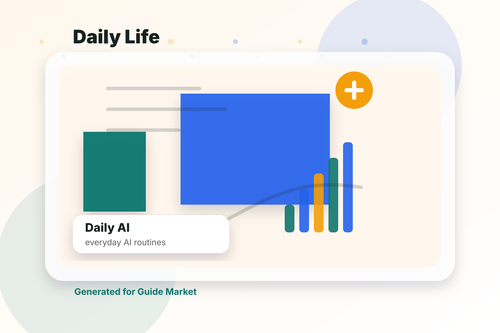

Best AI Tools for Daily Life
Updated May 12, 2026. Prices and features change often; confirm details on official websites.
If you want to use AI as a practical everyday helper for planning, learning, writing, and decisions, AI can help you move faster, compare options, and build a repeatable workflow. The important part is choosing the right tool for the job instead of trying to force one app to do everything.

Quick answer
The best choice depends on your goal. ChatGPT is usually the easiest place to start, Google is useful when you want a more focused experience, Microsoft can help with comparison or structure, and Anthropic is a strong supporting option for custom planning. For most readers, the smartest workflow is not one tool only. It is a simple stack: one tool for research, one for planning, one for execution, and one for review.
Comparison table
| Tool | Best use case | Why it matters |
|---|---|---|
| ChatGPT | daily use | Best starting point for most people. |
| organization | Strong specialist option for focused workflows. | |
| Microsoft | recipes | Useful when you want automation or comparison. |
| Anthropic | travel | Flexible support tool when you need custom prompts and planning. |
What to look for before choosing
Before you sign up for any AI tool, define the result you actually want. A vague goal creates vague output. A precise goal gives the software something useful to optimize for. In this category, the most important criteria are ease of use, quality of suggestions, customization, price transparency, export options, and how well the tool fits into your existing routine.
Think about frequency too. A tool you use every day can be worth learning deeply, while a tool you use once a month should feel simple immediately. The best AI products reduce friction. They should help you make faster decisions, not create a second job where you manage prompts, settings, subscriptions, and dashboards.
Privacy is another important factor. Many people paste sensitive information into AI systems without thinking. When you use these tools for daily ai, avoid sharing private documents, passwords, medical data, financial account details, or personal information you would not want stored by a third-party service. Read the tool's privacy policy and use built-in privacy controls when available.
ChatGPT
ChatGPT can be a strong option when your main goal is daily use. The advantage of using it in this workflow is that it gives you a structured starting point instead of forcing you to begin from a blank page. That matters because most people do not fail because they lack information. They fail because they have too many scattered options and no clear next step.
Use ChatGPT with a specific prompt or setup. Tell it your goal, your constraints, your level, your deadline, and what you have already tried. Then ask for a plan with steps, alternatives, and tradeoffs. If the output feels generic, do not accept it immediately. Ask for a version that is more realistic, cheaper, faster, easier, more advanced, or better suited to your situation.
The limitation is that AI can sound confident even when it is incomplete. Treat the output as a draft, not as final truth. Check important details, compare options, and use your judgment. This is especially important when money, health, education, travel, or career decisions are involved. The best results come from a loop: generate, review, adjust, and verify.
Google can be a strong option when your main goal is organization. The advantage of using it in this workflow is that it gives you a structured starting point instead of forcing you to begin from a blank page. That matters because most people do not fail because they lack information. They fail because they have too many scattered options and no clear next step.
Use Google with a specific prompt or setup. Tell it your goal, your constraints, your level, your deadline, and what you have already tried. Then ask for a plan with steps, alternatives, and tradeoffs. If the output feels generic, do not accept it immediately. Ask for a version that is more realistic, cheaper, faster, easier, more advanced, or better suited to your situation.
The limitation is that AI can sound confident even when it is incomplete. Treat the output as a draft, not as final truth. Check important details, compare options, and use your judgment. This is especially important when money, health, education, travel, or career decisions are involved. The best results come from a loop: generate, review, adjust, and verify.
Microsoft
Microsoft can be a strong option when your main goal is recipes. The advantage of using it in this workflow is that it gives you a structured starting point instead of forcing you to begin from a blank page. That matters because most people do not fail because they lack information. They fail because they have too many scattered options and no clear next step.
Use Microsoft with a specific prompt or setup. Tell it your goal, your constraints, your level, your deadline, and what you have already tried. Then ask for a plan with steps, alternatives, and tradeoffs. If the output feels generic, do not accept it immediately. Ask for a version that is more realistic, cheaper, faster, easier, more advanced, or better suited to your situation.
The limitation is that AI can sound confident even when it is incomplete. Treat the output as a draft, not as final truth. Check important details, compare options, and use your judgment. This is especially important when money, health, education, travel, or career decisions are involved. The best results come from a loop: generate, review, adjust, and verify.
Anthropic
Anthropic can be a strong option when your main goal is travel. The advantage of using it in this workflow is that it gives you a structured starting point instead of forcing you to begin from a blank page. That matters because most people do not fail because they lack information. They fail because they have too many scattered options and no clear next step.
Use Anthropic with a specific prompt or setup. Tell it your goal, your constraints, your level, your deadline, and what you have already tried. Then ask for a plan with steps, alternatives, and tradeoffs. If the output feels generic, do not accept it immediately. Ask for a version that is more realistic, cheaper, faster, easier, more advanced, or better suited to your situation.
The limitation is that AI can sound confident even when it is incomplete. Treat the output as a draft, not as final truth. Check important details, compare options, and use your judgment. This is especially important when money, health, education, travel, or career decisions are involved. The best results come from a loop: generate, review, adjust, and verify.
Prompts you can copy
Starter prompt: I want help with daily use, organization, recipes, travel, study, productivity, personal automation. Ask me the most important questions first, then create a practical plan with tools, steps, mistakes to avoid, and a simple checklist.
Comparison prompt: Compare ChatGPT, Google, Microsoft, Anthropic for my situation. Use a table with strengths, weaknesses, price considerations, learning curve, and best use case. Finish with one recommendation for a beginner and one for an advanced user.
Improvement prompt: Review this plan and make it more realistic. Reduce unnecessary steps, identify risks, and give me a version I can start today in less than 30 minutes.
Related guides
Detailed buying guide
Best AI Tools for Daily Life is a practical category, which means the best tool is not the one with the most impressive demo. The best tool is the one that helps everyday users who want help with planning, recipes, learning, writing, travel, and household decisions make better decisions repeatedly. In this guide, I compare ChatGPT, Google Gemini, Microsoft Copilot, Claude through the lens of real use, not just feature lists. A good AI tool should save time, reduce confusion, and make the next step clearer. If it creates more tabs, more subscriptions, and more decisions, it is probably not solving the real problem.
The first thing to decide is whether you need a specialist app or a flexible general assistant. Specialist apps usually win when the task has a repeatable structure, stored preferences, progress tracking, templates, or integrations. General assistants win when the task changes every time and you need custom reasoning. For this category, my default recommendation is ChatGPT for flexible daily help and Google for fact checking. That does not mean the other tools are weak. It means this option gives most readers the best balance of ease, reliability, cost, and control.
For beginners, the smartest approach is to start with the simplest workflow that can produce a useful result in one sitting. Do not subscribe to three services before you know what you actually need. Try the free chatbot tiers and search tools option first, build one complete example, and ask whether the result is good enough to repeat. Only consider a premium chatbot only if it becomes part of your daily routine when you can name the specific limitation you are paying to remove. Paying for AI without a clear bottleneck is one of the easiest ways to collect tools instead of results.
How to choose the right tool
Use five criteria before choosing: output quality, control, verification, learning curve, and total workflow fit. Output quality is obvious, but control is just as important. If the tool gives a polished result that is hard to edit, you may lose time fighting the software. Verification matters because AI can be persuasive even when it is incomplete. Learning curve matters because a tool you abandon after two days is effectively expensive even if it has a free plan.
Workflow fit is the criterion most people ignore. Ask where the tool fits before and after the AI step. What information do you feed into it? Where does the output go? Who checks it? What happens next? A tool can be excellent in isolation and still be wrong for you because it does not connect with the way you already work. The best products feel boringly useful after the novelty fades.
The biggest risk is letting AI make decisions without checking facts, costs, or consequences. This is why I recommend treating AI output as a draft or assistant layer rather than a final authority. Even when a tool is accurate, it may not know your preferences, your constraints, your budget, your policies, or your deadline. Human review is not a sign that AI failed. It is the normal way to turn fast output into reliable output.
Best use cases
These are the situations where the tools in this category usually make the biggest difference:
- planning meals
- summarizing options
- writing messages
- organizing errands and travel plans
Notice that each use case is concrete. That is deliberate. AI works better when the problem is specific. Instead of asking for a general recommendation, describe the starting point, the constraints, and the desired outcome. A weak request produces a generic answer. A precise request gives the model something useful to optimize.
Suggested workflow
Start by writing a short brief for the task. Include your goal, your current situation, your constraints, your deadline, what you have already tried, and what a successful output would look like. Then ask the AI to ask clarifying questions before producing the final answer. This single step improves results because it prevents the tool from guessing too quickly.
Next, ask for two versions: a beginner-friendly version and a more advanced version. Comparing both often reveals hidden tradeoffs. The beginner version usually has fewer moving parts and is easier to start. The advanced version may be more powerful but harder to maintain. Choose the version you can actually follow, not the version that looks most impressive.
After that, ask the tool to critique its own answer. Good prompts include: what assumptions are you making, what could go wrong, what should I verify manually, and what is the simplest next action? This turns the AI from a generator into a reviewer. It also makes the final result more trustworthy because you can see the weak points before you act.
Finally, save the best output as a reusable template. If you use the same category often, you should not start from zero every time. Keep your best prompt, your preferred format, and a checklist of things to verify. This is how AI becomes a system rather than a one-off trick.
Tool-by-tool notes
ChatGPT is usually the first option to test because it represents the most obvious path in this category. Its advantage is speed and familiarity. The limitation is that easy tools can encourage shallow work if you accept the first result without editing. Use it when you want to move quickly, but still review the result with your own criteria.
Google Gemini is better when you need a more focused workflow. In many cases, this kind of tool is less flexible than a general chatbot but more useful once your process is clear. It can reduce repetitive decisions and keep you inside a structured environment. The tradeoff is that structure can become restrictive if your needs are unusual.
Microsoft Copilot is strongest when you want comparison, rewriting, planning, or automation around the core task. I like using it as a second opinion because it can explain alternatives in plain language. The danger is overconfidence. If the output includes facts, prices, policies, schedules, or claims that matter, verify them before acting.
Claude is worth considering when you already like its ecosystem or when it solves one narrow problem better than the others. It may not be the best universal choice, but it can be the best fit for a specific habit, device, team, budget, or style.
Free vs paid decision
The free option is best when you are still learning the workflow. Free tiers are enough for testing prompts, comparing outputs, and discovering what you actually value. If you cannot get a useful result from the free version because the category requires integrations, exports, history, analytics, or heavy usage, then a paid plan may make sense.
Before paying, run a simple test: use the tool for one real project from start to finish. Measure time saved, quality improved, and stress reduced. If the tool only feels exciting but does not change the outcome, wait. If it helps you finish work faster or make a better decision, the subscription is easier to justify. The best paid AI tools pay for themselves through saved time, fewer mistakes, or better consistency.
I would keep one general assistant and one verification tool rather than juggling five apps for normal life tasks. This is my editorial position after comparing the category as a practical workflow. Tools are only useful when they change behavior. The winner is not always the most advanced model or the prettiest interface; it is the one you will use correctly when you are busy.
Common mistakes to avoid
The first mistake is asking vague questions. A prompt like "help me with this" forces the AI to invent context. Add details. The second mistake is skipping verification. AI can summarize, organize, and suggest, but it can also miss recent changes or misunderstand constraints. The third mistake is using too many tools at once. More software does not automatically mean a better system.
The fourth mistake is ignoring privacy. Do not paste sensitive personal, financial, medical, academic, or business information into a tool unless you understand how that service handles data. The fifth mistake is accepting generic output. If the answer could apply to anyone, ask for a version tailored to your budget, level, timeline, location, tools, and preferences.
A strong workflow is simple: define the task, generate a draft, review it, verify important details, and save what works. That rhythm applies across this entire category. Once you build that habit, AI becomes less of a novelty and more of a reliable assistant for repeatable decisions.
Final recommendation
If you are unsure, start with ChatGPT for flexible daily help and Google for fact checking. It gives the best starting point for the largest number of readers. Use free chatbot tiers and search tools when you are testing the category or working casually. Consider a premium chatbot only if it becomes part of your daily routine only after you have a repeatable need. The right tool should make the task easier to start, easier to finish, and easier to repeat. If it does not do those three things, keep looking or simplify the workflow.
The most important advice is to stay in control. AI should help you think, compare, draft, organize, and decide. It should not quietly replace your judgment. Use the tools for leverage, then bring your own context, standards, and common sense to the final decision.